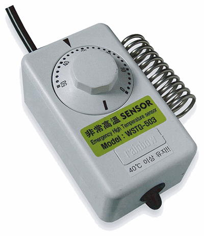

환기창을 여는 상한온도와 닫는 하한온도를 설정합니다. 현재온도가 설정값에 도달하면 같은 채널의 개폐기가 함께 작동합니다.
TTC시리즈
한 채널을 온도제어 또는 시간제어 중 하나로 선택해 자연환기창을 자동 운전하는 컨트롤러입니다.
1채널 온도 또는 시간 선택제어DC24V 출력자동·개별 수동운전기능 카드를 누르면 상세 설명이 열립니다.
TTC시리즈온도 또는 시간 자동제어
핵심 제어 요약
CONTROL MODE온도제어또는시간제어두 방식 중 하나를 선택
핵심 기능 카드를 눌러 장점과 확장 방법을 확인하세요.
제품 사양과 선택 안내
- 입력전압
- AC220V 60Hz
- 출력전압
- DC24V(±10%)
- 호환 개폐기
- 50W: WSM-4035(2A 이하) / 100W: WSM-6035(4A 이하)
- 표시방식
- 적색 FND(현재시각·현재온도·설정 데이터)
- 운전방식
- 수동운전 또는 자동운전
- 자동제어
- 온도제어 또는 시간제어(디지털 시계)
- 온도제어
- 스텝작동 또는 퍼지작동 중 선택운전
- 시간제어
- 분할작동 시 분할되감기 및 잠자기 기능
- 경보기능
- 이상고온 발생 시 내장 경음기 경보 및 열림작동
- 특별기능
- 작물보호(서모스타트), 센트럴 신호출력, 잠자기
- 적용센서
- 기본: 내복용 온도센서 / 옵션: 강우센서
제어 방식을 먼저 선택하십시오
TTC는 한 채널을 온도 또는 시간 중 한 가지 방식으로 운전합니다. 두 조건을 동시에 적용하는 방식은 아닙니다.
이런 시설에 적합합니다하나의 환기 구역을 온도 변화에 따라 자동 운전하거나, 매일 정해진 시각에 운전하려는 시설에 적합합니다. 같은 채널의 개폐기들은 모두 동일한 조건으로 함께 작동합니다.
MODEL LINEUP출력 용량·연결 대수별 생산모델＋
전동개폐기의 소비전류에 맞춰 50W 또는 100W 출력을 선택한 뒤 최대 연결 대수를 확인하십시오.
| 모델 NO. | 최대 연결 | |
|---|---|---|
| 50W 출력 | 100W 출력 | |
| TTC-504 | TTC-1004 | 4대 |
| TTC-506 | TTC-1006 | 6대 |
| TTC-508 | TTC-1008 | 8대 |
| TTC-5010 | TTC-10010 | 10대 |
| TTC-5012 | TTC-10012 | 12대 |
| TTC-5016 | — | 16대 |
| TTC-5020 | — | 20대 |
| TTC-5024 | — | 24대 |
※ 최대 연결 대수는 전동개폐기 수량 기준입니다.
TEMPERATURE OR TIME온도·시간 제어 설정＋
현재시각과 열림·닫힘 시각을 설정합니다. 설정한 시각이 되면 같은 채널의 개폐기가 함께 작동합니다.
온도제어와 시간제어는 운전선택 스위치로 구분하며 동시에 사용하는 기능이 아닙니다. 자동운전 전에 선택된 제어 방식과 설정값을 확인하십시오.
AUTO & MANUAL자동운전과 개별 수동운전＋
제어 방식 선택온도 또는 시간
›자동운전설정 조건에 따라 전체 라인 작동
›개별 스위치각 라인 열림·정지·닫힘
개별 스위치를 중앙의 정지 위치에 두면 자동운전 중에도 해당 라인은 작동하지 않습니다.
INCLUDED PARTS기본 제공 부품＋

예비퓨즈
컨트롤러 출력 회로 보호용

서모스타트
비상고온 감지와 작물 보호 운전에 사용

전원코드
컨트롤러 AC 전원 연결용

TNR 박스
개폐기 작동 시 발생할 수 있는 과전압 완화

설치 부품
컨트롤러 고정용 브래킷과 체결부품

사용설명서
향후 종이 설명서를 제품 QR 코드로 확인하는 디지털 설명서로 대체할 예정입니다.